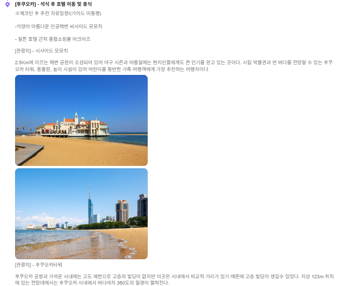
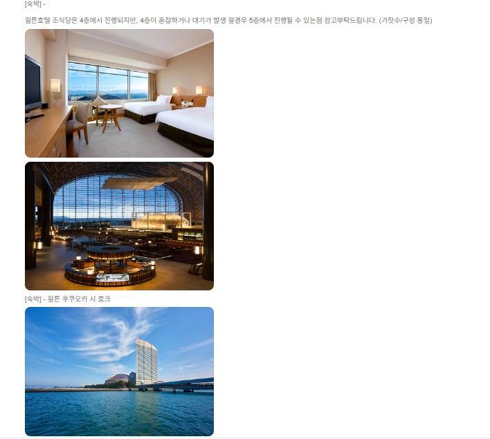

1. 후쿠오카와 근교 관광을 함께
후쿠오카 도심뿐 아니라 인기 근교 여행지인 유후인과 다자이후까지 함께 둘러보는 일정입니다. 짧은 일정 안에서 쇼핑과 시내 관광, 일본 특유의 온천 분위기까지 다양하게 경험하고 싶은 경우 비교해보기 좋습니다.

2. 온천 1박과 힐튼 1박
상품명에는 온천 숙박 1박과 힐튼 숙박 1박이 포함된 것으로 안내되어 있습니다. 숙박 자체를 여행의 중요한 요소로 생각한다면 호텔 위치, 온천 이용시간, 객실 형태와 조식 조건을 예약 전에 확인해보세요.

3. 나카스 크루즈와 식사 구성
나카스 크루즈와 대게, 주류 무제한 등의 내용이 상품명에 포함되어 있습니다. 실제 제공 메뉴와 이용시간, 주류 종류 및 제공 조건은 현지 사정이나 출발일에 따라 달라질 수 있으므로 상품 상세페이지 확인이 필요합니다.

4. 유후인·다자이후 일정
후쿠오카 근교의 대표적인 관광지인 유후인과 다자이후가 상품명에 안내되어 있습니다. 이동시간이 포함되는 일정인 만큼 각 지역의 체류시간과 자유시간 여부를 살펴보면 여행 스타일에 맞는지 판단하기 좋습니다.
5. 출발확정 상품도 최종 조건 확인
상품명에 출발확정으로 표시되어 있더라도 항공 일정, 호텔 배정, 관광 순서, 포함·불포함 비용, 가이드 경비, 쇼핑 일정과 취소·환불 규정은 예약 시점의 상세 조건을 기준으로 확인하세요.
후쿠오카 온천 패키지 2박3일 상품 확인하기
출발일, 가격, 항공편, 숙소와 포함·불포함 조건은 판매 페이지에서 최종 확인하세요.
여행 상품 자세히 보기 →후쿠오카 온천 패키지 2박3일 FAQ
후쿠오카 온천 패키지는 몇 박인가요?
이 페이지에서는 2박3일 일정으로 정리했습니다.
온천 숙박이 포함되어 있나요?
상품명 기준 온천 1박이 포함되어 있습니다.
힐튼 숙박도 포함되나요?
상품명에는 힐튼 1박으로 안내되어 있습니다.
유후인과 다자이후를 방문하나요?
상품명에 유후인과 다자이후 일정이 포함되어 있습니다.